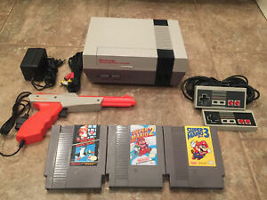

1980s to 1990s: The introduction of the "bit" heroes!
 Ahh, the memories... I still remember playing the Nintendo Entertainment System, or NES for short. Although I do not miss having to blow on the cartridges or cleaning them out when the game wouldn't start, I enjoyed the simplicity of playing a game with the directional pad and the buttons A and B. This is where my gaming journey truly began.
 The Legend of Zelda, probably
one of the greatest games ever played during that era. Sure, there were other great games like Duck Hunt where you
got to use a pistol to shoot down a duck and the joy of seeing your little hound dog giggle when missing a target. But The Legend
of Zelda was the first game I got to play where I went on an adventure with my trusty sword and shield. It was awesome seeing
that little sword shoot out little sword beams when your health was full. Then crawling the dungeons looking for that map,
compass, and specific gadget that would help you along the way. The Legend of Zelda series is still one of my favorite stories
and games to date.
The Legend of Zelda, probably
one of the greatest games ever played during that era. Sure, there were other great games like Duck Hunt where you
got to use a pistol to shoot down a duck and the joy of seeing your little hound dog giggle when missing a target. But The Legend
of Zelda was the first game I got to play where I went on an adventure with my trusty sword and shield. It was awesome seeing
that little sword shoot out little sword beams when your health was full. Then crawling the dungeons looking for that map,
compass, and specific gadget that would help you along the way. The Legend of Zelda series is still one of my favorite stories
and games to date.